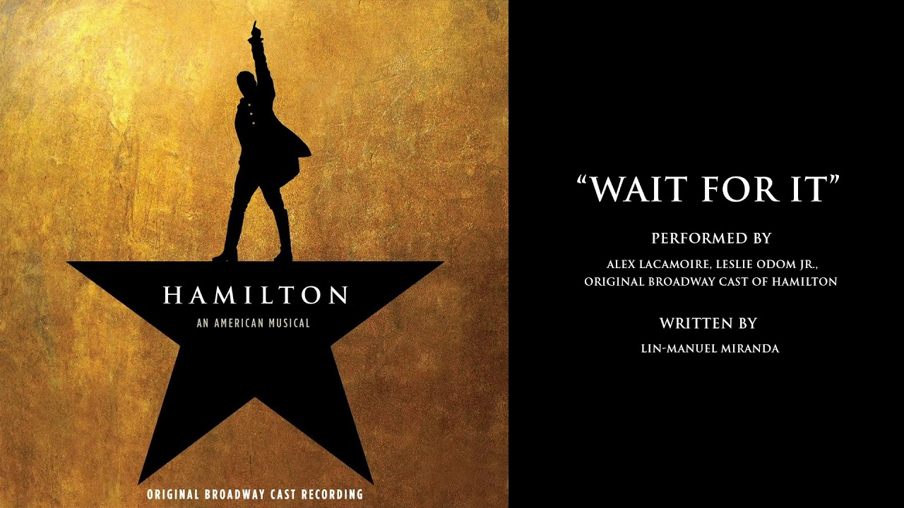

Wait for it - Hamilton (letra)

Love doesn't discriminate
Between the sinners
And the saints
It takes and it takes and it takes
And we keep loving anyway.
We laugh and we cry and we break
And we make our mistakes.
And if there's a reason I'm by her side
When so many have tried
Then I'm willing to wait for it.
I'm willing to wait for it.
My grandfather
Was a fire and brimstone
preacher, Preacher, preacher, preacher
But there are things that the homilies and hymns
Won't teach ya. Teach ya, teach ya, teach ya
My mother was a genius, Genius
My father commanded respect. Respect, respect
When they died they left no instructions.
Just a legacy to protect.
Death doesn't discriminate
Between the sinners and the saints
It takes and it takes and it takes
And we keep living anyway.
We rise and we fall and we break
And we make our mistakes.
And if there's a reason I'm still alive
When everyone who loves me has died
I'm willing to wait for it.
I'm willing to wait for it.
Wait for it Wait for it
Wait for it Wait for it
I am the one thing in life I can control
Wait for it Wait for it
Wait for it Wait for it
I am inimitable I am an original
Wait for it Wait for it
Wait for it Wait for it
I'm not falling behind or running late
Wait for it Wait for it
Wait for it Wait for it
I'm not standing still
I am lying in wait Wait
Wait Wait